ADVISORY
Starting with Android 15, RxLogger operates in Secure Mode by default, with legacy mode fully phased out. As a result, RxLogger only processes intents from third-party apps using the AppOps or App Token method; for more details, see Deployment. Additionally, the secure Backup method, which replaces the legacy backup method, is now the standard.Overview
RxLogger settings can be configured either through the RxLogger user interface or by deploying a configuration file (config.json) to the device. The config.json file can be exported and used to deploy consistent settings across multiple devices. For devices using the Android Enterprise Work Profile, RxLogger settings may differ based on whether the device is operating in the Work Profile or Personal Profile.
Starting with Android 15, RxLogger defaults to Secure Mode, enhancing its security by restricting external access to logs and providing a secure method for broadcasting intents. In this mode, only authorized apps can access logs or use the secure method to call RxLogger APIs. This minimizes the risk of unauthorized access to potentially sensitive data, ensures access is limited to trusted users and establishes a protected environment for deploying configuration files to adjust RxLogger settings.
RxLogger uses data collection modules to log various components of the Android system. These modules can be enabled, disabled, or customized as needed. Out of the 13 modules, 8 are enabled by default.
Modules Enabled by Default:
Modules Disabled by default:
Configuration File
All RxLogger settings are stored in a file on the device, permitting remote configuration and mass deployment of these files using an enterprise mobile management (EMM) system.
- File name -
config.json - Internal storage:
/sdcard/RxLogger(if the external SD card is not present on the device or Enable internal sdcard only option is activated) - External storage (SD card):
/storage/<UUID>/RxLogger, where <UUID> represents the UUID of the SD card (if the external SD card is present)
RxLogger settings can be configured through the RxLogger user interface (UI) or by editing the settings file.
Note: Zebra recommends using the same config.json file across devices with the same Android platform version. Use of the same file across different Android platform versions may lead to unexpected behavior.
Configure via UI
General Log Settings
Follow the steps below to configure general log settings. This method ensures accuracy and minimizes the risk of errors that may occur from manually editing values in config.json.
- From the RxLogger main screen, tap the settings icon at the top right.

- Tap RxLogger Settings.

- Enable/disable the desired settings:
• Notifications - When enabled, the RxLogger icon is displayed in the notification bar while running. This is enabled by default and helps confirm whether RxLogger is active in the background.
• Debug Logs - When enabled, this collects debug logs from RxLogger anddiagdaemon(its logging service). These logs are stored to the location specified in the Configuration File section. This setting is disabled by default.After enabling/disabling this setting, tap the back button, tap Save and reboot the device for the change to take effect.
• Internal Storage Logging Only - When enabled, logs are saved on the internal SD card even if an external SD card is inserted. By default, logs are saved to the external SD card when available.

- Tap the back button to save the configuration. A
Config.jsonconfiguration file is created and saved to either internal or external storage. RxLogger will restart to apply the new configuration settings.
Module Configuration
Follow these steps to configure module-specific settings:
- From the RxLogger main screen, tap the settings icon at the top right.
- Select the desired module to configure. 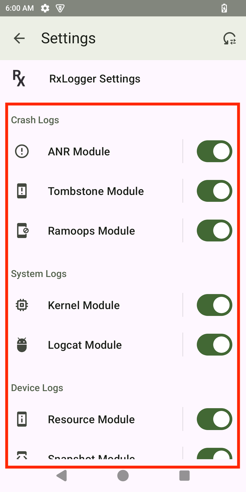
- Adjust the desired settings within the selected module. Refer to the respective module section in this guide for information on module-specific settings.
- Tap the back button to save the changes.
Configure via File
To manually configure RxLogger settings:
- Locate and retrieve the
config.jsonconfiguration file from either internal or external storage. - Manually update the
config.jsonfile with the required changes, modifying only the values in the "Value" field; all other fields are pre-defined. For parameter values, refer to the Modules section. Zebra recommends viewing the file in JSON format for easier editing. - For secure mode, broadcast the intent to trigger RxLogger to restart upon detecting an updated
config.jsonfile. This must be performed prior to file deployment. For instructions, see Secure Mode Deployment. - Deploy the
config.jsonfile to the designated path in Step 1.
Deployment
To deploy the configuration file, use the Deploy Config API.
Reset to Default
Reset to Default restores all configurations to their original settings, facilitating recovery from misconfigurations and enabling a fresh start with default values. This option is not available when RxLogger is active to prevent configuration changes from disrupting logging.
To activate Reset to Default, ensure RxLogger is disabled and then use one of the following methods:
- RxLogger Settings: From the RxLogger main screen, tap the settings icon at the top right, tap the reset icon, then select Yes to reset settings.

- Module Settings: From any of the module settings screen, for example Logcat Module, tap the reset icon at the top-right, then select Yes to reset settings.
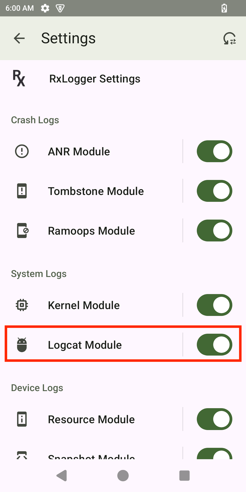
Android Work Profile
Android Enterprise Work Profile is designed for mixed-use, company-owned devices, enabling organizations to enforce corporate policies and restrictions while preserving the privacy of personal data. Formerly known as Corporate-Owned, Personally Enabled (COPE), this allows a single device to serve both professional and personal purposes by providing separate Work and Personal Profiles. The Work Profile ensures corporate data remains secure and isolated from personal applications, safeguarding user privacy.
When Work Profile is active on a company-owned device, RxLogger operates exclusively in Secure Mode. Application developers must use one of the following supported methods to interact with RxLogger:
Behavior and Restrictions
The Work Profile introduces specific restrictions and behaviors for RxLogger. Below are the key guidelines:
Accessibility:
- RxLogger is disabled in the Personal Profile and is only accessible within the Work Profile.
- In the Work Profile, logs can only be accessed through a backup process. Refer to the Backup section for more details.
Micro SD Card Compliance:
- Since RxLogger operates in Secure Mode within the Work Profile, the external storage must be encrypted to enable logging to the external storage path.
Backup
Work Profile:
- To access logs in the Work Profile, users must initiate a backup operation. This process zips all logs into a file and stores it in the following path:
/storage/emulated/10/RxLogger/
Personal Profile:
- Users have the option to retain a copy of logs in their Personal Profile for additional debugging purposes. Although logs are not directly accessible in the Personal Profile, the "Keep a Copy" option ensures a copy of the logs is saved. By default, this option is disabled.
Configuration Deployment
In Work Profile mode, configurations must be deployed using AppOps or Tokenization. After triggering the intent, the configuration file must be deployed within 60 seconds into the Work Profile’s RxLogger storage path: /storage/emulated/10/RxLogger/. Once the timer expires, RxLogger automatically reconfigures itself with the new settings. These changes can be verified in the RxLogger Settings interface.
Storage Path
Logs & Bug Report:
RxLogger stores logs and bug report files in the following paths:
- Personal Profile:
- Internal storage path:
/sdcard/Android/data/com.symbol.rxlogger/RxLogger/secure/log_data/ - External storage path:
/storage/<UUID>/Android/data/com.symbol.rxlogger/RxLogger/secure/log_data/, where<UUID>represents the device's unique identifier
- Internal storage path:
- Work Profile:
- Storage path:
/storage/emulated/10/RxLogger/
- Storage path:
Backup & Config.json file:
RxLogger stores the backup and config.json files in the following paths:
Personal Profile:
- Internal storage path:
/sdcard/RxLogger/ - External storage path:
/storage/<UUID>RxLogger/
- Internal storage path:
Work Profile:
- Storage path:
/storage/emulated/10/RxLogger/
- Storage path:
ANR Module
The ANR Module controls collection of data from Android's "application not responding" (ANR) events. Event data is copied directly from the Android system and saved in a file called trace.txt or some variant thereof. For example, the ANR event for a post-loaded app would be similar to trace-<app_package_name>.txt.
To configure the ANR Module:
From the RxLogger main screen, tap the settings icon at the top right, then tap ANR Module to display the ANR Module screen.
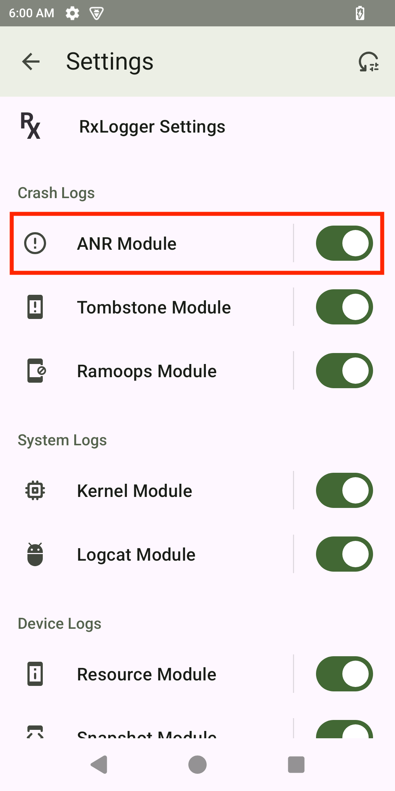 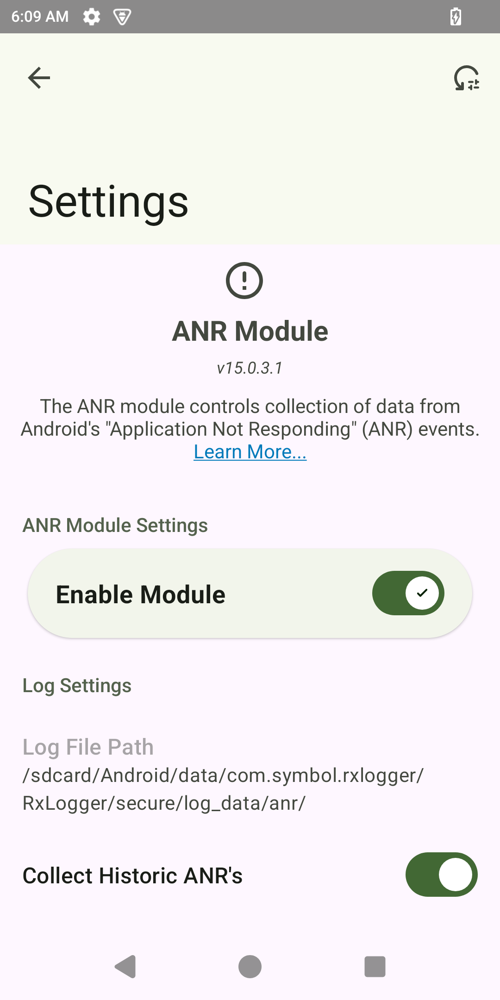
Options:
| Option Name | Description | Type | Value(s) |
|---|---|---|---|
| Enable Module | Enable or disable collection of ANR files | Boolean | true (default) false |
| Log File Path | The storage path for ANR files | String | /sdcard/Android/data/com.symbol.rxlogger/RxLogger/secure/log_data/anr/ |
| Collect Historic ANR's |
Tombstone Module
The Tombstone Module collects Android native crash logs from the device, providing stack traces and detailed information about the crashed process. Tombstone files are generated sequentially starting from tombstone_00through tombstone_09, and then the sequence restarts at tombstone_00. Starting with Android 11, the system can generate up to 32 tombstone log files (ranging from tombstone_00 to tombstone_31), after which the sequence resets to tombstone_00. To identify the most recent logs, refer to the timestamps.
For more information on Android native crash logs, visit Crash dumps and tombstones.
To configure the Tombstone Module:
From the RxLogger main screen, tap the settings icon at the top right, then tap Tombstone Module to display the ANR Module screen.
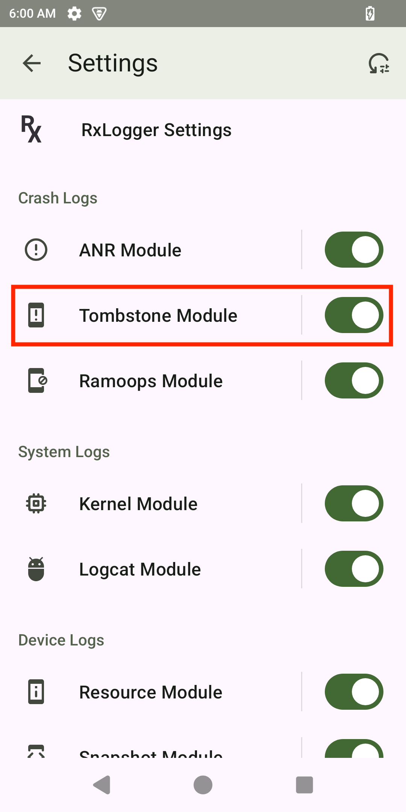 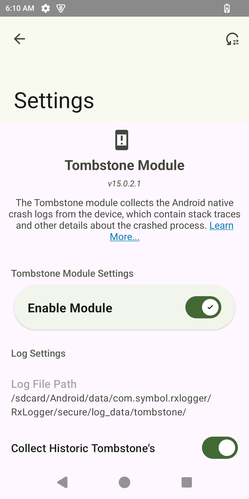
Options:
| Option Name | Description | Type | Value(s) |
|---|---|---|---|
| Enable Module | Enable or disable tombstone collection | Boolean | true (default) false |
| Log File Path | The storage path for tombstone logs | String | /sdcard/Android/data/com.symbol.rxlogger/RxLogger/secure/log_data/tombstone/ |
| Collect Historic Tombstone's | Enable or disable historic tombstone log collection | Boolean | true false |
Ramoops Module
The Ramoops Module captures the last kmsg from the device, writing it to persistent memory immediately prior to a system crash. Ramoops outputs text files generated by the system at boot or after a kernel panic. These files contain raw kmsg data from the boot immediately prior to the crash. More about Ramoops.
To configure the Ramoops Module:
From the RxLogger main screen, tap the settings icon at the top right, then tap Ramoops Module to display the Ramoops Module screen.
Options:
| Option Name | Description | Type | Value(s) |
|---|---|---|---|
| Enable Module | Enable or disable Ramoops collection | Boolean | true (default) false |
| Log File Path | The storage path for Ramoops files | String | /sdcard/Android/data/com.symbol.rxlogger/RxLogger/secure/log_data/ramoops/ |
| Log File Name | The file name of the stored ramoops file | String | ramoops (default) |
| Log File Count | The maximum number of ramoops log files to keep at any one time | Integer | Minimum: 1 Maximum: 10 Default: 2 |
Kernel Module
The Kernel module captures kmsg data from the Android system and outputs it to a series of numbered files (i.e. KLog0.txt, KLog1.txt, KLog2.txt) with 0 being the newest.
To configure the Kernel Module:
From the RxLogger main screen, tap the settings icon at the top right, then tap Kernel Module to display the Kernel Module screen.
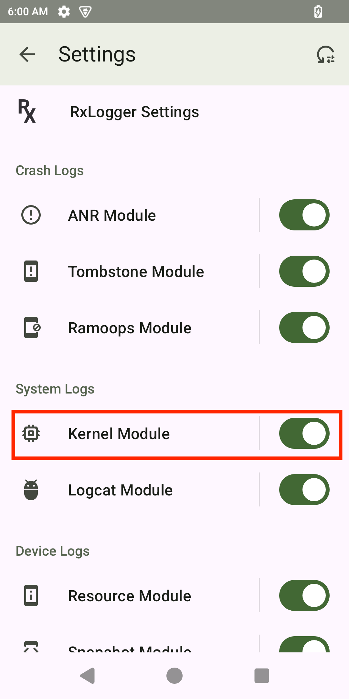 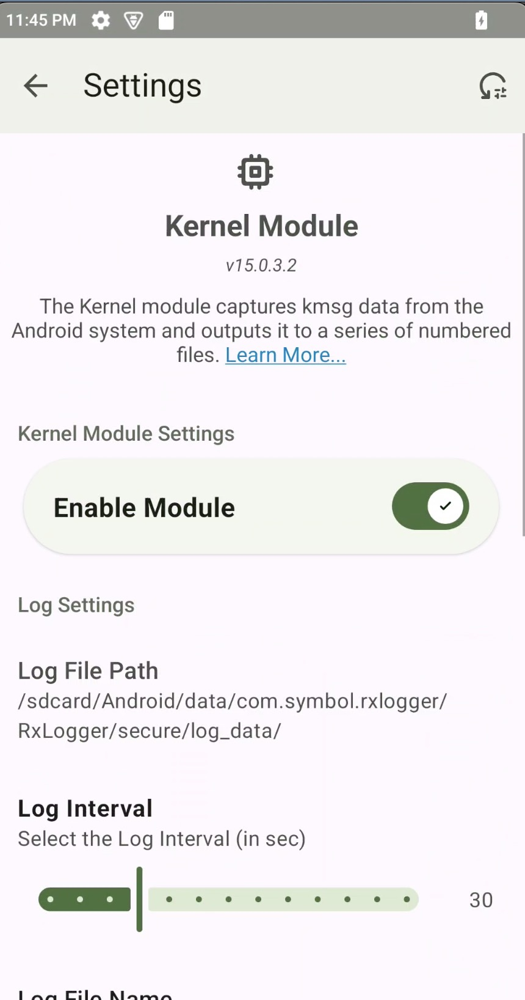
Options:
| Option Name | Description | Type | Value(s) |
|---|---|---|---|
| Enable Module | Enable or disable collection of kernel logs | Boolean | true (default) false |
| Log File Path | The storage path for kernel logs | String | /sdcard/Android/data/com.symbol.rxlogger/RxLogger/secure/log_data/ |
| Log Interval | The frequency in seconds in which kernel logs will be dumped into the collecting file | Integer | Minimum: 1 Maximum: 120 Default: 30 |
| Log File Name | The base file name to save kernel logs | String | KLog (default) |
| Log File Size | The size (in MB) of each kernel log file before it is rotated | Integer | Minimum: 5 Maximum: 50 Default: 10 |
| Log File Count | The maximum number of kernel log files to keep at any one time | Integer | Minimum: 1 Maximum: 20 Default: 2 |
| System Timestamp | Enable or disable time stamp in kernel logs | Boolean | true (default) false |
| System Timestamp Interval | The interval (in seconds) to add timestamp in kernel logs | Integer | Minimum: 1 Maximum: 120 Default: 60 |
| Logcat Integration Override | Enable or disable logcat integration | Boolean | true false (default) |
Logcat Module
The Logcat Module collects data from Android's internal logging mechanism, commonly known as logcat buffers. This module captures logs from any or all of the following buffers:
- System
- Event
- Radio
- Main
- Crash
User can configure the module to store data from selected buffers either in seprate files or combined into a single file. The output is stored as a series of sequentially numbered text files (e.g. Main0.txt, Main1.txt, Main2.txt) where 0 represents the most recent file.
To configure the Logcat Module:
From the RxLogger main screen, tap the settings icon at the top right, then tap Logcat Module to display the configuration screen.

Options:
| Option Name | Description | Type | Value(s) |
|---|---|---|---|
| Enable Module | Enable or disable collection of logcat logs | Boolean | true (default) false |
| Log File Path | The storage path for logcat logs | String | /sdcard/Android/data/com.symbol.rxlogger/RxLogger/secure/log_data/ |
| Logcat Buffer Size | Select the logcat buffer size Note: For Android 11, the default is 4MB. |
List | 0 - 256K (default) 1 - 1M 2 - 4M 3 - 8M 4 - 16M |
| Enable Main Logcat | Enable or disable the collection of the main buffer | Boolean | true (default) false |
| Main Log Interval | The frequency (in seconds) in which the main buffer logs will be dumped into the collecting file | Integer | Minimum: 1 Maximum: 120 Default: 30 |
| Main Log File Name | The base file name to save main buffer logs | String | Main (default) |
| Main Log File Size (MB) | The size of each main buffer log file (in MB) before rotating | Integer | Minimum: 5 Maximum: 50 Default: 5 |
| Main Log File Count | The maximum number of main buffer log files to keep at any one time | Integer | Minimum: 1 Maximum: 20 Default: 2 |
| Main Log Filter | Custom logcat filter to run on the main buffer | String | [Enter string] |
| Enable Event Logcat | Enable or disable the collection of the event buffer | Boolean | true (default) false |
| Event Log Interval | The frequency (in seconds) in which event buffer logs will be dumped into the collecting file | Integer | Minimum: 1 Maximum: 120 Default: 30 |
| Event Log File Name | The base file name to save event buffer logs | String | Event (default) |
| Event Log File Size | The size (in MB) of each event buffer log file before rotating | Integer | Minimum: 5 Maximum: 50 Default: 5 |
| Event Log File Count | The maximum number of event buffer log files to keep at any one time | Integer | Minimum: 1 Maximum: 20 Default: 20 |
| Event Log Filter | Custom logcat filter to run on the event buffer | String | [Enter string] |
| Enable Radio Logcat | Enable or disable the collection of the radio buffer | Boolean | true (default) false |
| Radio Log Interval | The frequency (in seconds) in which radio buffer logs will be dumped into the collecting file | Integer | Minimum: 1 Maximum: 120 Default: 30 |
| Radio Log File Name | The default base file name to save logs from the radio buffer | String | Radio (default) |
| Radio Log File Size | The size (in MB) of each radio buffer log file before rotating in megabytes | Integer | Minimum: 5 Maximum: 50 Default: 5 |
| Radio Log File Count | The maximum number of radio buffer log files to keep at any one time | Integer | Minimum: 1 Maximum: 20 Default: 2 |
| Radio Log Filter | Custom logcat filter to run on the radio buffer | String | [Enter string] |
| Enable System Logcat | Enable or disable the collection of the system buffer | Boolean | true (default) false |
| System Log Interval | The frequency (in seconds) in which system buffer logs will be dumped into the collecting file | Integer | Minimum: 1 Maximum: 120 Default: 30 |
| System Log File Name | The base file name to save system buffer logs | String | System (default) |
| System Log File Size | The size (in MB) of each system buffer log file before it is rotated | Integer | Minimum: 5 Maximum: 50 Default: 5 |
| System Log File Count | The maximum number of system buffer log files to keep at any one time | Integer | Minimum: 1 Maximum: 20 Default: 2 |
| System Log Filter | Custom logcat filter to run on the system buffer | String | [Enter string] |
| Enable Crash Logcat | Enable or disable the collection of the crash buffer | Boolean | true (default) false |
| Crash Log Interval | The frequency (in seconds) in which crash buffer logs will be dumped into the collecting file | Integer | Minimum: 1 Maximum: 120 Default: 30 |
| Crash Log File Name | The base file name to save crash buffer logs | String | Crash (default) |
| Crash Log File Size | The size (in MB) of each crash buffer log file before it is rotated | Integer | Minimum: 5 Maximum: 50 Default: 5 |
| Crash Log File Count | The maximum number of crash buffer log files to keep at any one time | Integer | Minimum: 1 Maximum: 20 Default: 2 |
| Crash Log Filter | Custom logcat filter to run on the crash buffer | String | [Enter string] |
| Enable Combined Logcat | Enable or disable the collection of the combined logcat buffer, which includes the following buffers: main, event, radio, system, and crash | Boolean | true (default) false |
| Combined Logcat Buffer | |||
| Combined Log Interval | The frequency (in seconds) in which combined buffer logs will be dumped into the collecting file | Integer | Minimum: 1 Maximum: 120 Default: 30 |
| Combined Log File Name | The base file name to save combined buffer logs | String | Combined (default) |
| Combined Log File Size | The size (in MB) of each combined buffer log file before it is rotated | Integer | Minimum: 5 Maximum: 50 Default: 10 |
| Combined Log File Count | The maximum number of crash buffer log files to keep at any one time | Integer | Minimum: 1 Maximum: 20 Default: 2 |
| Combined Log Filter | Custom logcat filter to run on the combined buffer | String | [Enter string] |
Resource Module
The Resource Module records device information and system statistics at defined intervals, providing insights into the health and behavior of device resources over time. The collected data is saved as a series of comma-separated values stored in .CSV files.
While most metrics are consistent across devices with different chipsets, the data for Battery Power may vary depending on the device's chipset.
To configure the Resource Module:
From the RxLogger main screen, tap the settings icon at the top right, then tap Resource Module to display the configuration screen.
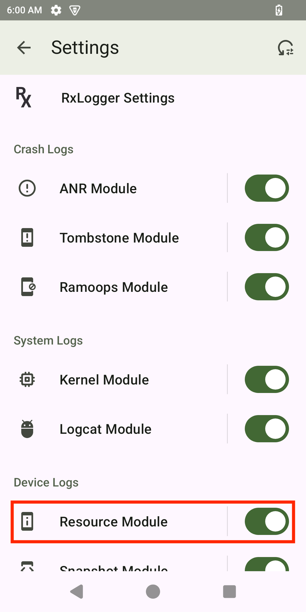 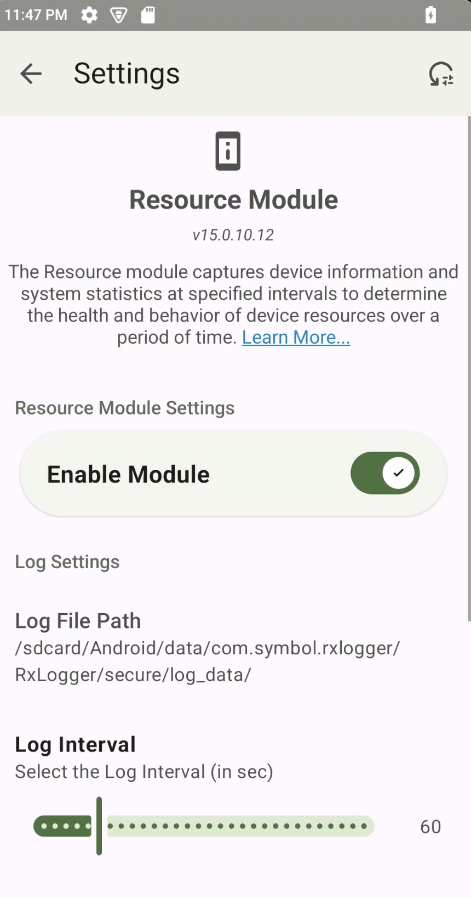
Options:
| Option Name | Description | Type | Value(s) |
|---|---|---|---|
| Enable Module | Enable or disable Resource collection | Boolean | true (default) false |
| Log File Path | The storage path for Resource files | String | /sdcard/Android/data/com.symbol.rxlogger/RxLogger/secure/log_data/ |
| Log Interval | The frequency (in seconds) in which Resource collects and logs information | Integer | Minimum: 10 Maximum: 300 Default: 60 |
| Log File Size | The size (in MB) of each Resource Log file before it is rotated | Integer | Minimum: 5 Maximum: 50 Default: 10 |
| Log File Count | The maximum number of Resource files to keep at any one time | Integer | Minimum: 1 Maximum: 10 Default: 2 |
| Resource Log Field | Select the resource type to log: | List | Power - Collect battery statistics, see Battery Power System Resource -</> Collect system resource information Advanced CPU - Collect CPU status information Network - Collect network status information Bluetooth - Collect Bluetooth informaation Light - Collect ambient light level information (default) Heater - Collect heater information Hide Non-Applicable data - Collect data not applicable based on available device resources. For example, a WLAN only device will not log WAN data. Hide Raw Data - Collect raw data information |
Snapshot Module
The Snapshot Module captures device information and system statistics at a specific point in time, offering a snapshot of the device's health and resource behavior over that given time period. It generates a single text file for each data collection interval, containing the collected metrics for the selected parameters.
While similar to the Resource Module, the Snapshot Modules captures more granular data, including threads and dumpsys information, and a device fingerprint header for each file. Snapshot consolidates all enabled data selections into one text file per data collection cycle.
To configure the Snapshot Module:
From the RxLogger main screen, tap the settings icon at the top right, then scroll down and tap Snapshot Module to display the configuration screen.
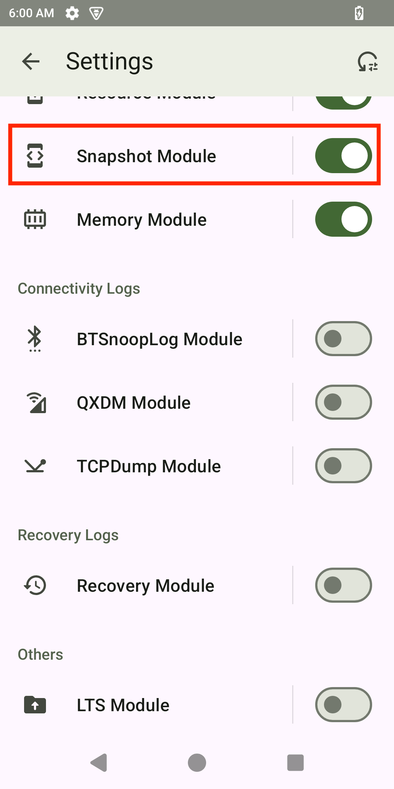 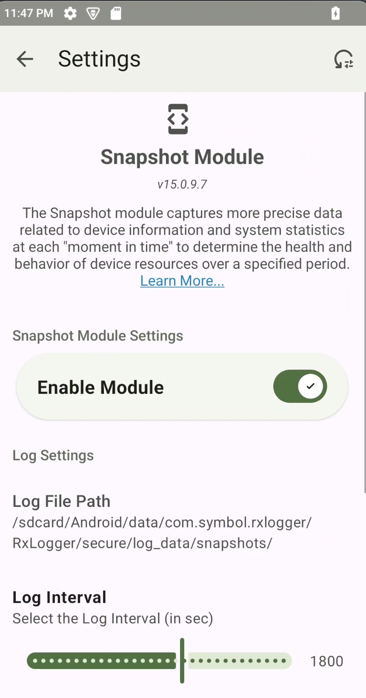
Options:
| Option Name | Description | Type | Value(s) |
|---|---|---|---|
| Enable Module | Enable or disable Snapshot collection | Boolean | true (default) false |
| Log File Path | The storage path for Snapshot logs | String | /sdcard/Android/data/com.symbol.rxlogger/RxLogger/secure/log_data/snapshots/ |
| Log Interval | The frequency (in seconds) in which Snapshot will collect information and dump into its file | Integer | Minimum: 60 Maximum: 3000 Default: 1800 |
| Log File Name | The base file name of stored Snapshot file | String | snapshot (default) |
| Log File Count | The maximum number of Snapshot files to keep at any one time | Integer | Minimum: 1 Maximum: 100 Default: 50 |
| Snapshot Log Field | Select the Snapshot log fields to include | List | Top - Run the top command for data collectionCPU Info - Run the dumpsys cpuinfo and cat /proc/stat commands for data collectionBattery Info - Run the dumpsys batterystats and dumpsys battery commands for data collectionThermal Service - Wake Lock - Collect the sys/fs wake_lock information Time In State - Collect the sys/fs cpufreq for each core Process - Run the ps -p command for data collectionThreads - Run the ps -t -p -P command for data collectionProperties - Run the getprop command for data collectionInterface - Run the netcfg command for data collectionIP Routing Table - Collect the net route for data collection Connectivity -Run the dumpsys connectivity command for data collectionWi-Fi -Run the dumpsys wifi command for data collectionFile System -Run the df command for data collectionUsage Stats -Run the dumpsys usagestats command for data collectionISub -Capture information regarding SIM cards and the mobile network subscription Telephony Debug Service -Capture debug information related to telephony services and cellular network connectivity. Telephony Registry - Capture state of telephony-related components and services Telecom - Collect telephony-related functionality, such as making and receiving calls, handling SIM cards, and managing call logs ISms - Capture information about the SMS (Short Message Service) functionality through the Isms interface Location - Capture detailed information about the device's location providers, location requests, and other location-related details Phone - Capture information about the phone state, call-related details, signal strength, network information and other phone-related details Carrier Config - Capture detailed information about the configuration settings that are applied by the device for a specific carrier |
Memory Module
| Option Name | Description | Type | Value(s) |
|---|---|---|---|
| Enable Module | Enable or disable Memory module log collection | Boolean | true (default) false |
| Log File Path | The storage path for Memory logs | String | /sdcard/Android/data/com.symbol.rxlogger/RxLogger/secure/log_data/memory/ |
| Log Interval | The frequency (in seconds) at which the Memory module collects information | Integer | Minimum: 60 Maximum: 3000 Default: 1800 |
| Log File Name | The base file name of stored Memory log file | Integer | Minimum: 60 Maximum: 3000 Default: 1800 |
| Log File Count | The maximum number of Memory log files to keep at any one time | Integer | Minimum: 1 Maximum: 100 Default: 50 |
| Memory Info Field | Choose one of the following: • Memory Info [-s system] - Enable/disable running the dumpsys meminfo -s and cat /proc/meminfo commands to collect memory usage of system processes. Enabled by default. Available on all devices except WS50.• Memory Info [-a application] - Enable or disable running the dumpsys meminfo -a and cat /proc/meminfo commands to collect memory usage of installed apps. Disabled by default. |
Integer | true (default) false true false (default) |
| Disk Usage | Boolean | true (default) false |
|
| Disk Usage Details | Boolean | true false (default) |
|
| Disk Free | Boolean | true (default) false |
BTSnoopLog Module
The BTSnooplog Module captures Bluetooth HCI (Host Controller Interface) snoop logs from the device, recording all Bluetooth transmissions with the connected Bluetooth peripheral. These logs are stored in:
/sdcard/Android/data/com.symbol.rxlogger/RxLogger/secure/log_data/btsnooplog/
Each log file is named in the format hci_snoop<YYYYMMDDhhmmss>.cfa. A maximum of two log files can exist at any given time, with each file having a size limit of 64 MB. When a newer .cfa log reaches its maximum size, RxLogger overwrites the older log file with the updated HCI data. To collected the BTSnoopLog files, RxLogger must first be stopped.
Important Notes:
- BTSnoopLog is not supported on TC15 and TN28 devices.
- When a Bluetooth peripheral is paired and BTSnoopLog module is enabled, the Bluetooth connection will disconnect and re-connect to the peripheral. This is required for BTSnoopLog to start capturing snoop logs and will also occur when any configuration changes are made to the BTSnoopLog Module.
To configure the BTSnoopLog Module:
From the RxLogger main screen, tap the settings icon at the top right, then scroll down and tap BTSnoopLog Module to display the configuration screen.
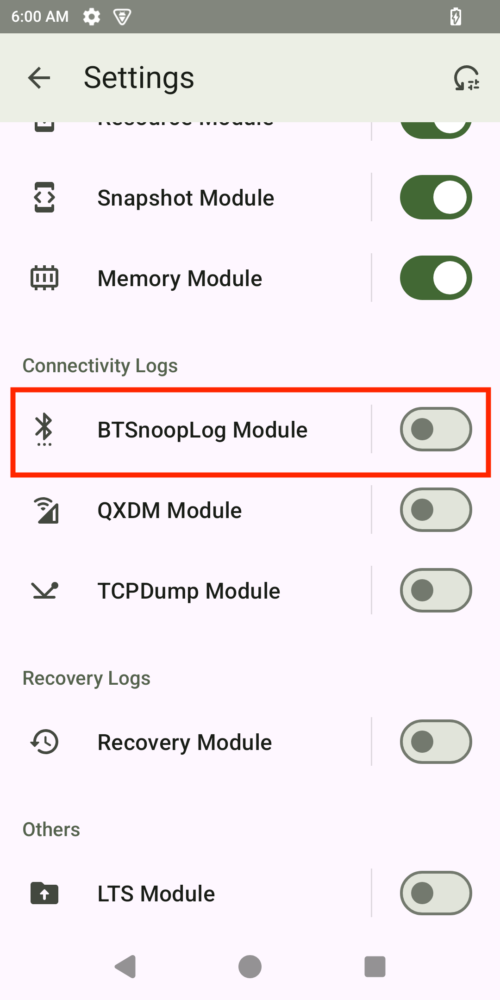 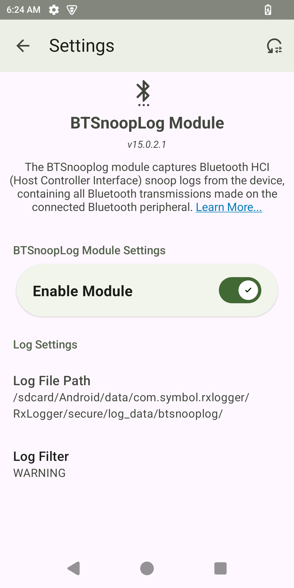
Options:
| Option Name | Description | Type | Value(s) |
|---|---|---|---|
| Enable Module | Enable or disable BTSnooplog module log collection | Boolean | true false (default) |
| Log File Path | The storage path for BTSnoopLog files | String | /sdcard/Android/data/com.symbol.rxlogger/RxLogger/secure/log_data/btsnooplog/ |
| Log Filter | Determines the amount of information logged | List | NONE (0) ERROR (1) WARNING (0) (default) API (3) EVENT DEBUG (4) FULL DEBUG (5) VERBOSE (6) |
QXDM Module
The QXDM Module captures Qualcomm Modem logs from the device, which are read using a Qualcomm utility. This module also accepts a user-defined or custom configuration file Custom_filter.cfg generated through Qualcomm tools. This configuration file is stored in the /sdcard/Android/data/com.symbol.rxlogger/RxLogger/secure/log_data/qxdm/cfg folder.
For SD660 devices, QXDM Module is only available on WAN devices. However, for newer chipsets such as SD6490 and SD6375, it is available on both WAN and WLAN devices due to the inclusion of the battery filter. For more information, see Zebra Platform Devices list.
IMPORTANT NOTE: Output from this module can consume all available storage space if the "Custom Log" option is not enabled with a specified "Maximum Log File." Zebra recommends defining an appropriate log size and maximum log quantity based on the available storage capacity.
To configure the QXDM Module:
From the RxLogger main screen, tap the settings icon at the top right, then scroll down and tap QXDM Module to display the configuration screen.
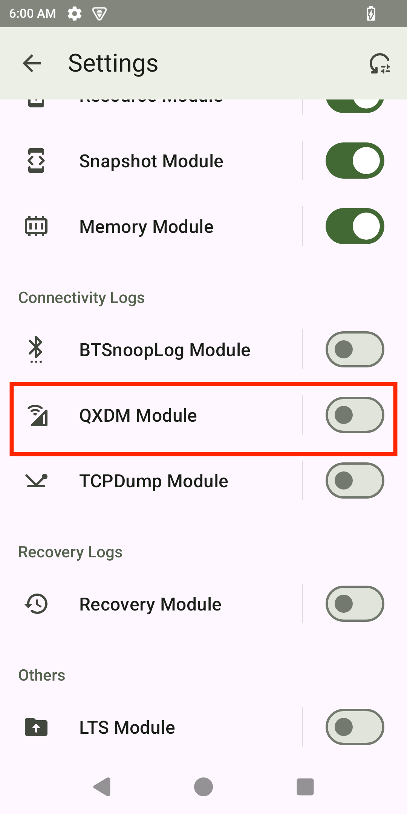 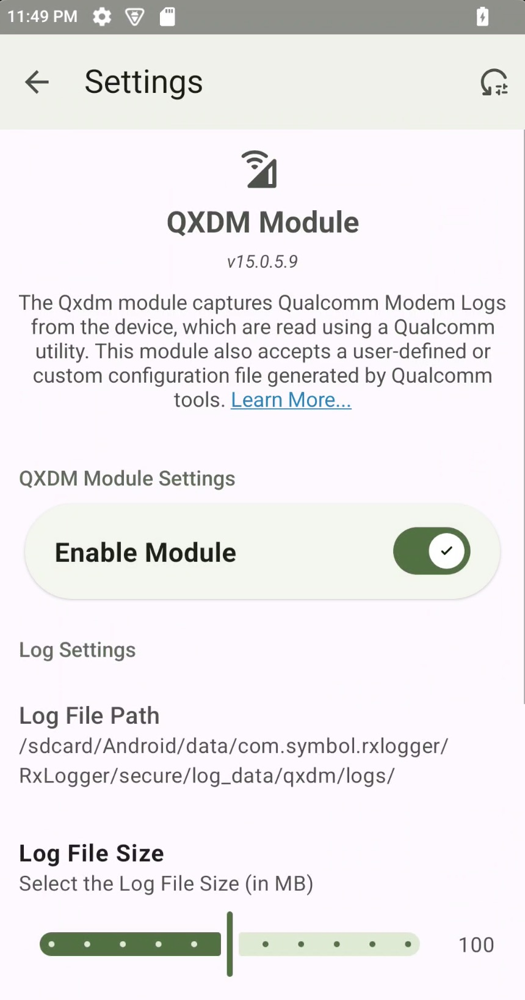
Options:
| Option Name | Description | Type | Value(s) |
|---|---|---|---|
| Enable Module | Enable or disable QXDM collection | Boolean | true false (default) |
| Log File Path | The storage path for QXDM files | String | /sdcard/Android/data/com.symbol.rxlogger/RxLogger/secure/log_data/qxdm/logs |
| Log File Size | Specify the size (in MB) of each individual QXDM log file | Integer | Minimum: 50 Maximum: 150 Default: 100 |
| Log Test Sets | Number of test sets to retain (each test consists of a start and stop) | Integer | Minimum: 1 Maximum: 10 Default: 3 |
| Log Filter | Select the log filter that QXDM needs to process | List | Default-Lite (0 - default - Note: This filter is not available on SD660-platform devices, see Zebra Platform Devices.) Default (2) Battery (3) Audio (4) User Defined (5 - from /sdcard/Android/data/com.symbol.rxlogger/RxLogger/secure/log_data/qxdm/cfg/Custom_filter.cfg) |
| Logging Limit Type | Select custom log option to specify the maximum number of log files to be generated | List | Default logging (0 - default) Custom Log (1 - Specify Max Log File) |
| Maximum Log File | Applies to Custom Log, specifies the number of log files to keep on a test set which must be specified by user | Integer | Minimum: 1 Maximum: 10 Default: 3 |
TCPDump Module
The TCPDump Module captures packet data from all device network connections on the device and outputs a binary file. This file can be analyzed using Wireshark or other standard network analysis tools.
To configure the TCPDump Module:
From the RxLogger main screen, tap the settings icon at the top right, then scroll down and tap TCPDump Module to display the configuration screen.
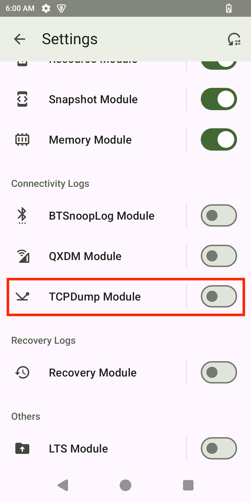 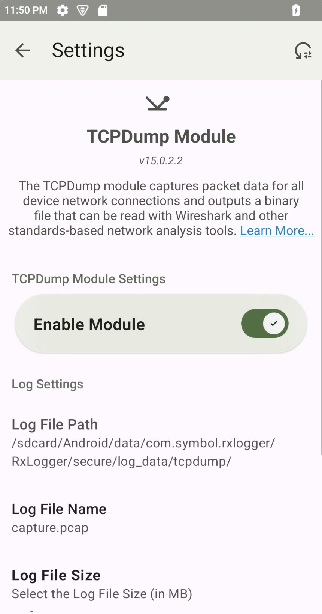
Options:
| Option Name | Description | Type | Value(s) |
|---|---|---|---|
| Enable Module | Enable or disable tcpdump collection | Boolean | true false (default) |
| Log File Path | The storage path for TCPDump logs | String | /sdcard/Android/data/com.symbol.rxlogger/RxLogger/secure/log_data/tcpdump |
| Log File Name | The file name of the stored TCPDump file | String | capture.pcap (default) |
| Log File Size | The max file size (in MB) allowed before TCPDump files are rotated | Integer | Minimum: 5 Maximum: 50 Default: 5 |
| Log File Count | The maximum number of TCPDump files to retain | Integer | Minimum: 1 Maximum: 20 Default: 2 |
| Backup | Enable or disable backup | Boolean | true false (default) |
Recovery Module
The Recovery Module captures recovery and OSUpdate logs, as well as Android's Rescue Party logs from the device. Rescue Party, supported in RxLogger starting with Android 9.0, helps prevent devices from getting stuck in reboot loops. When a boot loop is detected, Android initiates a "rescue party," which performs a series of actions in an attempt to recover the device. If all recovery attempts fail, Rescue Party reboots the device into recovery mode and prompts the user to perform a factory reset.
To configure the Recovery Module:
From the RxLogger main screen, tap the settings icon at the top right, then scroll down and tap Recovery Module to display the configuration screen.
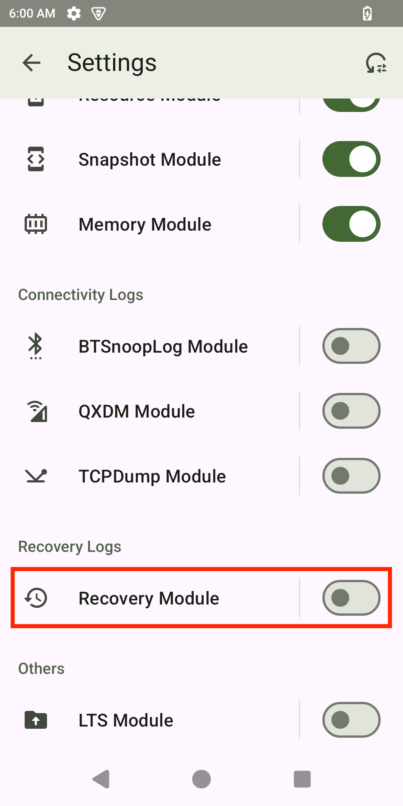 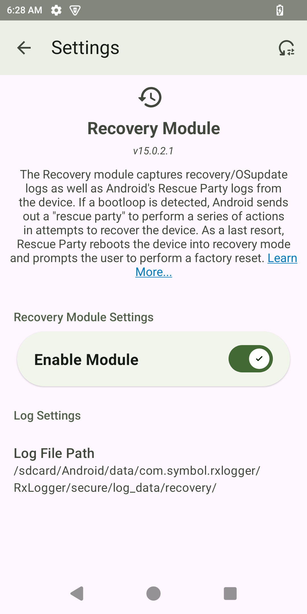
Options:
| Option Name | Description | Type | Value(s) |
|---|---|---|---|
| Enable Module | Enable or disable Recovery module log collection | Boolean | true false (default) |
| Log File Path | The storage path for TCPDump logs | String | /sdcard/Android/data/com.symbol.rxlogger/RxLogger/secure/log_data/recovery |
LTS Module
The Long Term Storage (LTS) Module collects log files generated by other active modules and consolidates them for analyzing device health and behavior over a period of time. The output files are compressed using gzip and stored in a specified path, which follows the structure outlined below. If multiple logs are stored within in the same hour (recorded in military time), they are sequentially numbered from 00 to 99.
Storage Path Format:
/<device_model>/<BSP_build_number>/<device_serial_number>/<YYMMDD>/<HHxx>/
- Example: TC51/91-01-21-NN-00/16885225D0029/170621/2100/
To configure the LTS Module:
From the RxLogger main screen, tap the settings icon at the top right, then scroll down and tap LTS Module to display the configuration screen.
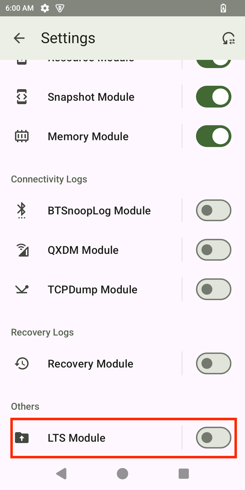 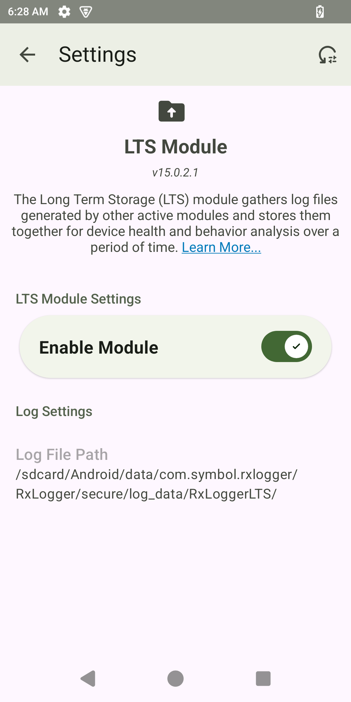
Options:
| Option Name | Description | Type | Value(s) |
|---|---|---|---|
| Enable Module | Enable or disable LTS collection | Boolean | true false (default) |
| Log File Path | The storage path for LTS logs | String | /sdcard/Android/data/com.symbol.rxlogger/RxLogger/secure/log_data/RxLoggerLTS |
Related Links
- About RxLogger - Provides an overview of RxLogger
- User Guide - Provides instrucdtions on using RxLogger
- APIs - Guides how to use APIs